嚴選植物
採集植物「指紋」
確認植物富含對人體有用之植物營養素
即便是同一種植物，隨隨著品種不同，營養價值也不一。因此，我們透過DNA分析和層析法，辨認富含有用植物
生化素的品種。這種方法稱為「植物指紋採集」。
選擇植物
辨認品種
「DNA分析」
分析植物營養素的種類與含量
「層析法」
植物指紋
從「植物資料庫」中，嚴選
富含最有用、最安全植物營養素的植物
經指紋採集的植物資料，會儲存於植物資料庫（FTL）的資料庫中。
研究人員會根據產品的效用，從資料庫中精心挑選最具效用且最安全的植物。
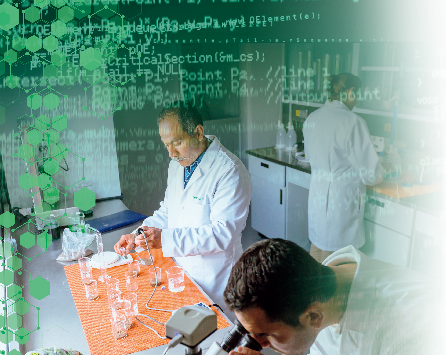
植物資料庫（FTL）
涵蓋超過1,300 種不同的植物資料
根據每一種植物的植物營養素類型與含量建立資料庫，並涵蓋效用與安全資訊。
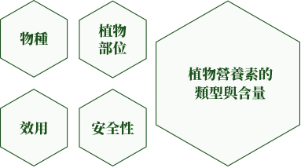
附註：植物資料庫（FTL）也用於紐崔萊™以外的Artistry™和G&H產品研發。資料庫目前大約有1,300種植物資料（截至2018年8月為止）。
嚴選優質種子
精心研究
確認富含植物營養素的種子品種
我們的農場設有種子研究專區，
專門研究富含植物營養素並可達豐富產量的種子品種。
研究種子品種
植物營養素含量
×
產量
研究在這兩大方面
可達最高成效的物種
研究種子品種：墨西哥培塔可農場

嚴選通過認定，確認安全且富含植物營養素的種子
並於植物的產地證明記錄相關資料
所有植物均有產地證明
記錄種子產地
記錄種子測試結果
提供批號與記錄
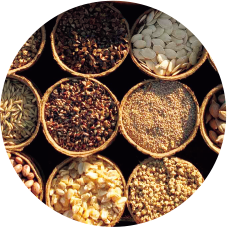
純度
發芽率
營養價值
發現／未發現遭到污染等
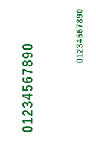
記錄種子產地
記錄種子測試結果
純度
發芽率
營養價值
發現／未發現遭到污染等
提供批號與記錄
如此一來，即使植物已經製成產品，也能夠追溯回種子階段的歷程。
選擇優質耕地
我們開發
利於產生植物營養素的耕地
我們從三座有機農場和全球經紐崔萊™認證的農場中，
嚴選栽種植物的最佳耕地。
三座有機農場

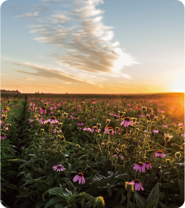
鱒魚湖農場
（美國華盛頓州）

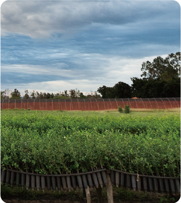
田谷農場
（巴西東南部塞阿臘州）

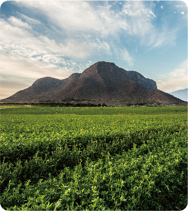
培塔可農場
（墨西哥哈利斯科州）
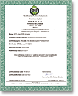
附註：主要產品成分均於上述三座有機農場栽種。
我們在遼闊的有機農場上
培育大量植物營養素
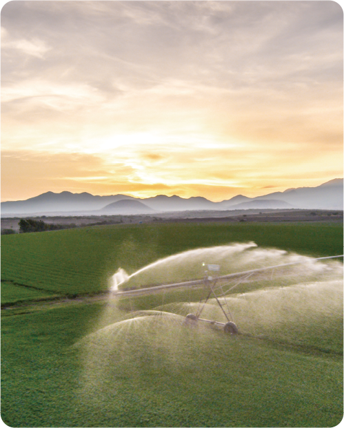
紐崔萊自有的有機農場
佔地總面積
約2,400公頃
（約 6,000英畝）
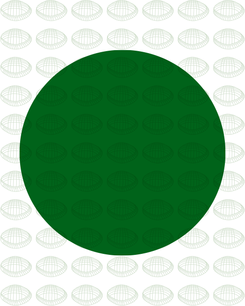
為台北小巨蛋的
12,000倍大
栽種作物
使用有機農耕法栽種蔬果
確保豐富的植物生化素
花青素
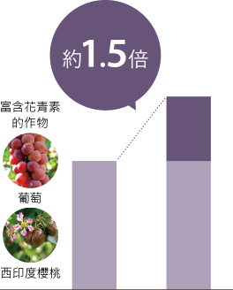
一般栽種＜有機栽種
黃酮醇
如：槲皮素
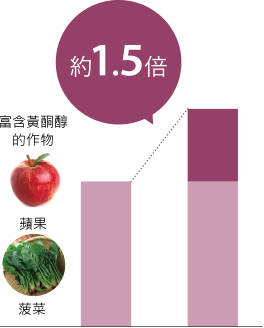
一般栽種＜有機栽種
類黃酮
如：橙皮苷
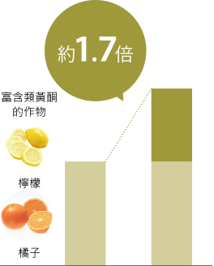
一般栽種＜有機栽種
附註：參考資料來源為《英國營養學雜誌》(2014), 112, 794‒811；此為針對343份關於有機與無機作物營養價值之研究論，進行徹底回顧後所得出之統計平均值。資料並非取自實際作物，而是取自公開領域之資訊。研究發現未包含以紐崔萊作物進行研究之資料數據。
不使用合成的農用化學品或殺蟲劑
以全天然方式處理病蟲害
使用洋甘菊與大蒜等
天然農用化學品

透過瓢蟲捕食害蟲等做法
實現病蟲害防治
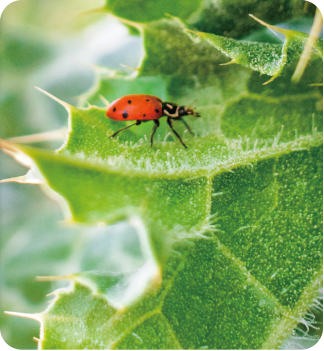
透過老鷹和貓頭鷹捕食等做法
實現危害生物防治
我們利用蚯蚓堆肥確保土壤養分
使用產品原始成分的植物濃縮素餵養土壤中的蚯蚓*
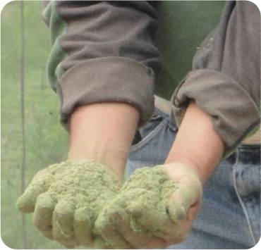
蚓糞富含有機物質，可滋潤土壤養分
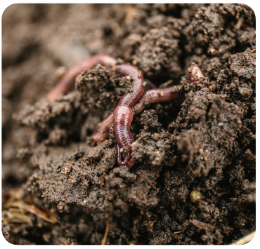
含豐富養分的土壤經過篩選，製成液態肥料，噴灑於土壤
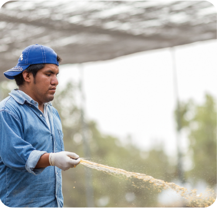
附註：產品無法使用或用剩濃縮素。
如此可確保土壤富含養分
細心除草
以免雜草吸收植物的養分
發芽後，每小時檢查，拔除雜草
在發芽期間細心照護，確保植物的營養價值
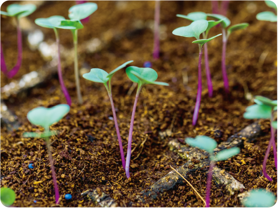
安裝GPS的牽引機，提高除草效率
以衛星定位資訊，精準掌控
*採用先進的廢棄控制系統，可大幅減少廢氣排放。
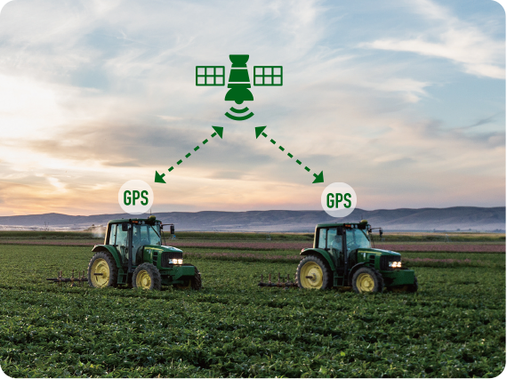
在不使用除草劑的情況下，去除99％的雜草
收成
在作物營養價值最高時採收
以西印度櫻桃為例
當果實呈現綠色時，營養價值最高。
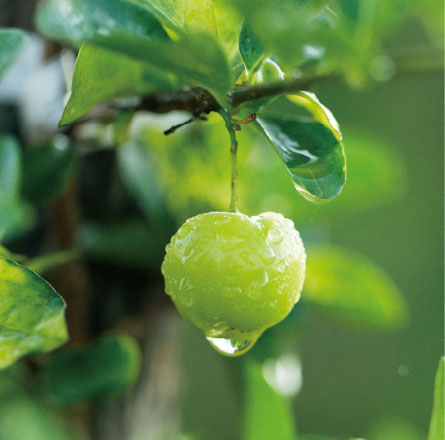
收成季節的營養價值對照
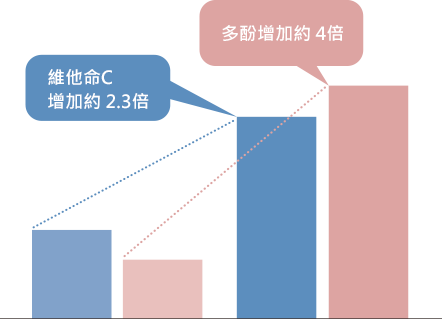
成熟，果實為紅色
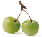
綠色，成熟前
維他命C：毫克（每100ml果汁）/多酚：沒食子酸當量（每100g新鮮果實）
附註：資料參考來源為2012年《農業和食品化學雜誌》（Journal of Agricultural and Food Chemistry 2012），由Luciana De Siqueira Oliveira、Carlos Farley Herbster Moura、Edy Sousa De Brito、Rosa Virginia Soares Mamede和Maria Raquel Alcantara De Miranda發表之〈不同種西印度櫻桃（Malpighia emarginata D.C）品種水果發育期間之抗氧化代謝功能〉（Antioxidant Metabolism during Fruit Development of Different Acerola (Malpighia emarginata D.C) Clones）
採收的果實立即進行脫水乾燥處理
保存營養價值
收成20分鐘內進行乾燥處理
因為從果實採收的那一刻起，營養價值就會開始流失。
乾燥機

附註：紐崔萊自有的有機農場和紐崔萊™認證農場使用乾燥機對新鮮水果、草藥、植物跟莖以及其他較不穩定的植物原料進行脫水烘乾處理。
濃縮萃取營養素
使用獨家萃取技術
萃取植物營養素含量最高的外皮與種子，保留植物的最佳營養素
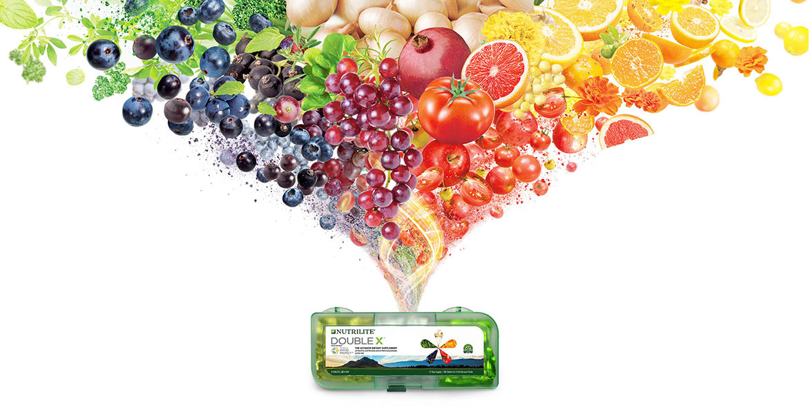
附註：並非在任何情況下均可對整株植物（包括外皮與種子）進行濃縮萃取。我們僅會找出具備最高營養價值的精華部位並加以利用。
使用植物營養素的獨特萃取技術
1
植物進行乾燥脫水處理
2
研磨
3
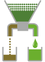
萃取富含營養素的部位，與纖維分離
4
製作濃縮液
5
去除水分，製造濃縮素
噴霧乾燥法
將濃縮液噴灑至高溫金屬板上，瞬間移除水分
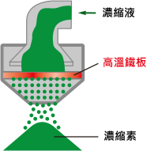
折射窗乾燥法*
可保留遇熱流失的營養素
新技術
將濃縮液倒在使用熱水循環的金屬板上
以循序漸進的方式去除水分
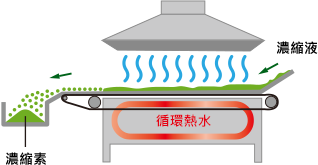
*折射窗乾燥法：使用水的導熱能力進行乾燥的技術
生產與品質控管
產品完成前的
安全控管至關重要
在產品品質控制方面，我們採用GMP*標準，確保營養素的完整性，並避免產品出現差異、污染與異物。
紐崔萊™遵循美國規定之cGMP* 標準，落實一貫化作業流程的生產與品質控管。
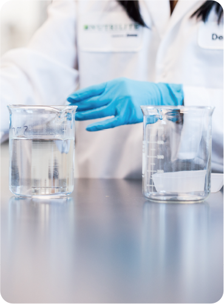
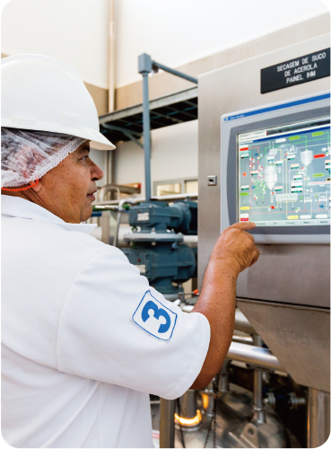
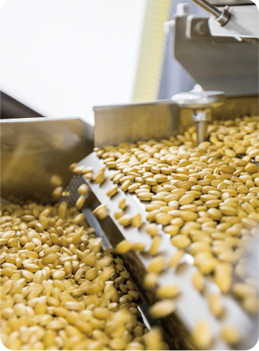
*指《良好作業規範》：為美國標準，前面加上象徵最新版本的字母「c」，表示該測試方法等均符合最新要求。
符合嚴格的美國標準，搭配額外自訂的品管措施
為消費者提供最安全的營養補充品
紐崔萊™的品質控制是一套獨家的制度，同時也符合美國cGMP標準。
營養補充品cGMP 法律規定
815頁準則內容
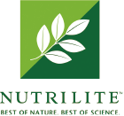
營養補充品cGMP + 額外品質控制
紐崔萊™自訂的額外標準
815頁準則內容
*資料出處：全球營養集團（GNG）資料
附註：星星數和影像表示紐崔萊™品質控制標準和美國cGMP相較之狀態。
*資料出處：全球營養集團（GNG）資料
附註：星星數和影像表示紐崔萊™品質控制標準和美國cGMP相較之狀態。
實施美國cGMP標準與紐崔萊™自訂品管措施概覽
安麗標準
檢查以確保輻射殺菌*1

安麗標準
X光異物偵測儀*2
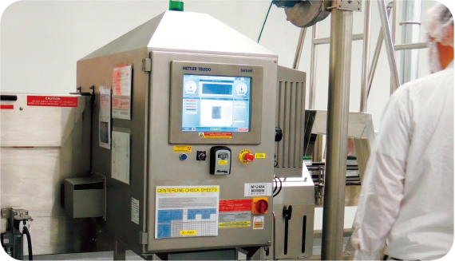
每個細節嚴格把關
成分
一年500,000次
原料
一年500,000次
*1 檢查確認所有使用之材料與成分均經過輻射殺菌
*2 X光異物偵測儀僅用於特定產品，包括DOUBLE X和優質蛋白質等產品，但未涵蓋所有產品
包裝
我們確保無論任何情況
均可提供穩定品質的植物營養素
光是包裝流程每年便進行30,000 次防震與溫度測試，以確保一致品質
防震測試
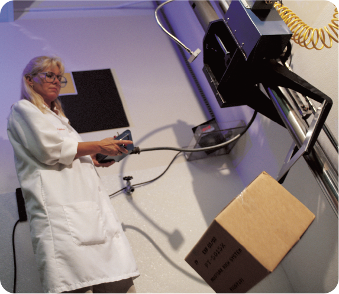
溫度測試
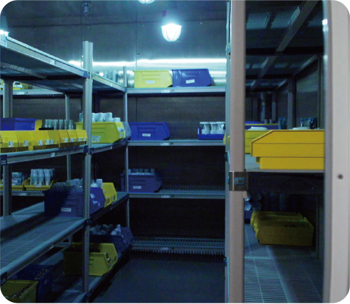
提供最優質的植物營養素
紐崔萊™對於植物營養素的品質堅持
可直接追溯回種子階段（可追溯性）
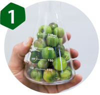
嚴選植物
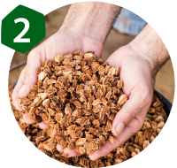
嚴選優質種子
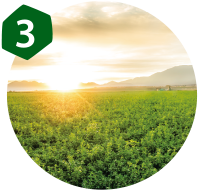
選擇優質耕地

栽種作物
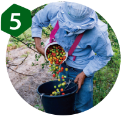
收成
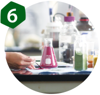
濃縮萃取營養素
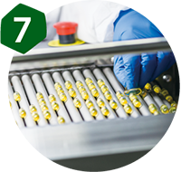
生產與品質控管
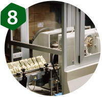
包裝
提供最優質的植物營養素
全球銷售第一的維生素及營養補充品品牌*1
紐崔萊是全球唯一在自有的有機農場栽種、採收及生產植物原料的維生素/礦物質品牌*2
*1 根據歐睿國際有限公司（Euromonitor International Limited）；維生素及營養補充品，全球品牌名，基於零售價的零售總額，%占比，2017年數據
*2 宣稱來源：歐睿國際有限公司，根據2018年對全球維生素及營養補充品生產商所做的回顧，包括他們所擁有的整個生產流程，從有機農場到生產製造。歐睿國際不對任何第三方就該宣稱承擔責任。有關詳細的定義，請訪問https://www.euromonitor.com/amway-claims